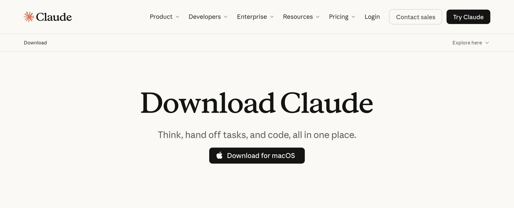

Claude Code
Claude Code is Anthropic’s coding agent. It works in a folder on your computer: it writes the files, runs them, and changes them when you ask. A tool can grow past one screen, into several pages or a whole website. This website was built with it. In the Shortcuts and Claude session, it is the Round 2 tool.
Best for
Tools bigger than one screen: several pages, saved settings, a site like this one. The tool stops being the limit. You become the limit.
Start here
The Code tab in the Claude desktop app, for Mac or Windows.
It needs a paid Claude plan: Pro, Max, Team or Enterprise.
Hong Kong is not on Anthropic’s list of supported regions for Claude, and Anthropic’s terms allow Claude, Claude Code included, to be used only from a supported region. Check with HKIS leadership and IT before you rely on it.
This guide is a draft. Screenshots marked “to come” are still to be taken, and anything tagged TBC still needs checking.
Exercise 1: Get the app and choose a folder

- Go to claude.com/download, choose Download for macOS, and open Claude from Applications.
- Sign in: choose Continue with Google or Continue with email. Claude Code needs a paid plan: Pro, Max, Team or Enterprise.
- Make a new, empty folder for your tool, for example in Documents.
- In the Claude app, choose Code.
- Start a new session. Choose Select folder, and pick your folder.
Screenshot to come
The Code tab in the Claude desktop app, with the folder choice marked 5.
Claude gets read and write access to the folder you choose. Keep students’ names and personal information out of it.
On a Pro or Max account, Anthropic can use your chats to train its models. To stop this, open Settings, then Privacy, and turn off Help improve our AI models. Team and Enterprise plans don’t train on chats by default.
Exercise 2: Describe your tool
Start from your prompt spine. Claude Code can make more than one screen, so say what the pages are and where the tool will live.
Build a single-screen tool for a Grade 7 student who loses their place in a multi-step maths problem. Show the current step first, then let them tick it off. Keep the language at Grade 5. No sign-in. Put everything in one file called index.html.
Not yet tested. TBC
At first, set the permission mode to Manual. Claude Code then stops to ask before it changes a file or runs a command: read what it wants to do, then allow it. The default, Auto, decides for itself which steps are safe.
Screenshot to come
Claude Code writing the files, with a request to allow a change.
Exercise 3: See it, then change it
Screenshot to come
Your tool open in the app’s browser pane, beside the chat.
- Ask Claude Code to show you the page. It opens beside the chat, in the app’s own browser.
- Use it as a student would.
- Ask for one change at a time, and check each one. If a change makes it worse, ask Claude Code to put it back.
Exercise 4: Publish it
When it works, put it online so students can open it from a link. You need a free GitHub account. Claude Code asks before each step, and may ask you to sign in to GitHub in your browser.
Help me publish this folder with GitHub Pages, step by step. Explain each step before you do it.
Not yet tested. TBC
Push it further
Change one thing at a time, and test after each change.
Add a second page for the teacher, with the answers.
Make it work without an internet connection.
Make it easier to read: bigger text and more contrast.
Explain each file you made, in plain English.
No desktop app? Claude Code on the web, at claude.ai/code, does the same work on a GitHub repository instead of a folder on your computer.
Videos
Videos to come. Each one will load only when you press play.
Video to come
A first project in Claude Code.
Why it is worth watching. TBC
Video to come
Claude Code for teachers who don’t code.
Why it is worth watching. TBC
Video to come
From a folder on your computer to a link students can open.
Why it is worth watching. TBC